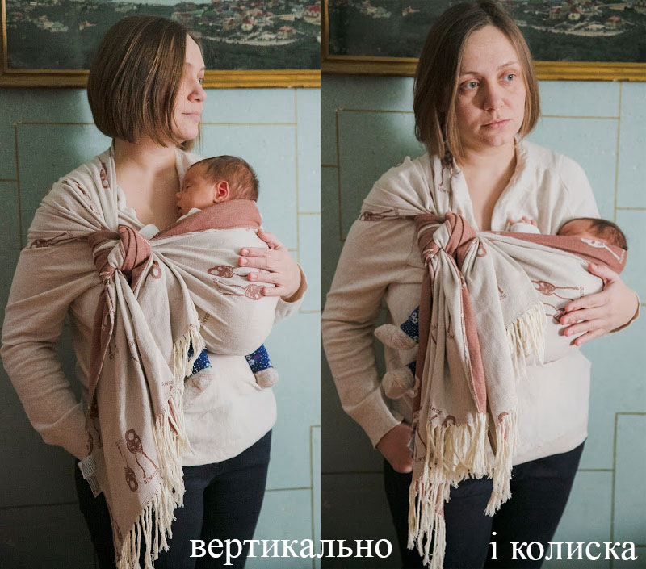
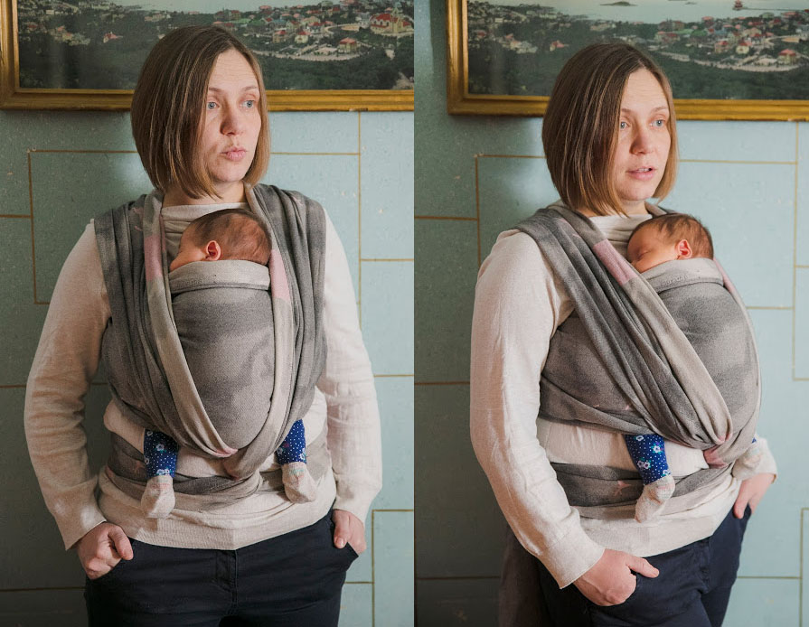
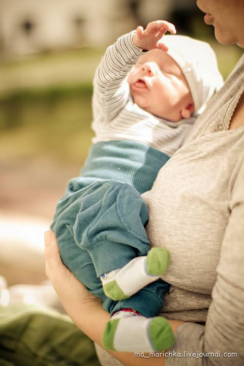
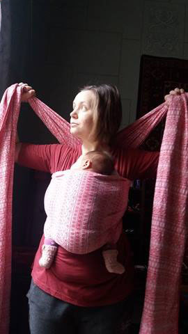
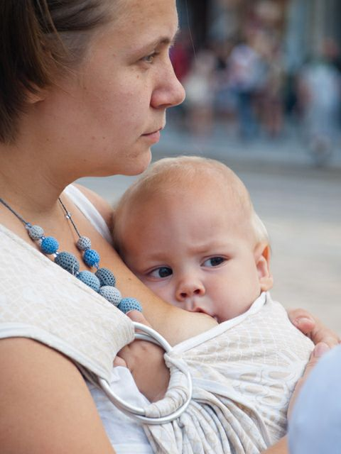
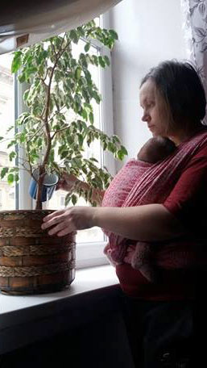
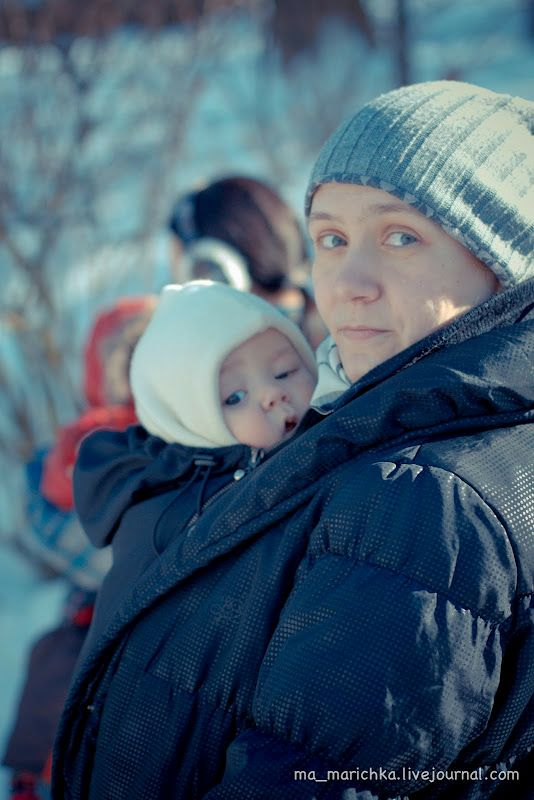

Слінг і новонароджений

Поява новонародженого малюка - це особливий період в житті кожної сім’ї. У когось він тягнеться повільно і довго, у когось пролітає вмить, проте, в будь-якому випадку, він вимагає від батьків і особливо від мами перебудови сталого способу життя і пошуку способів існування з немовлям. Чим же особливий цей період?
- Організм мами відновлюється після пологів, вона може відчувати слабкість, швидко втомлюватись
- Емоційна нестабільність. Під впливом гормональних змін емоційна чутливість підвищується, мама болюче сприймає невдачі і засмучується
- Вся сім’я переживає перебудову звичного способу життя, а якщо дитина перша - то мама сильніше за всіх
- Налагоджується грудне вигодовування
- Якщо це перша дитина, батьки вчаться брати його на руки і доглядати за малюком
Освоєння слінгу в цей період або дозволяє розправити крила і полегшено видихнути, або ж (на жаль, нерідко) призводить до того, що мама забирає слінг на поличку зі словами “Нам слінг не пішов”. Давайте потішимось за перших мам, і спробуємо допомогти решті.

Важливо! Не намагайтесь освоїти слінг одразу після пологів, якщо у вас нема такої необхідності. Дайте собі час на відновлення і адаптацію. Виділіть собі хоч один-два тижні (а після кесаревого розтину і довше), ваш слінг зачекає на вас;) Якщо ви почуваєтесь добре або ж ваш малюк вирішив, що він ведмедик панда і мав би жити на мамі 24 год на добу, то не зволікаючи відкриваємо “чарівну” шафку зі слінгом.
Ще один важливий момент, на котрому хочемо звернути увагу: не буває дітей, котрі зовсім-зовсім ніколи не сидять в слінгу. Навіть дуже рухлива дитина може там знаходитись на період сну, прогулянки, поїздки, походу в магазин і т.п. Це означає, що фраза “моя дитина не любить там знаходитись” не відповідає дійсності. Їй може не подобатись знаходитись там за певної конкретної причини, в певній визначеній ситуації чи навіть в якомусь конкретному слінгу, але це не означає - зовсім і ніколи. Це означає, що мама не спромоглась зрозуміти і навчитись. Можливо, не дуже і хотілось, але це її право.
Але, якшо ви бажаєте здобути дорогоцінну свободу пересування і насолоджуватись теплом найріднішого малюка під час прогулянки, ходімо далі!

Носіння на руках.
Якщо у вас перша дитина чи різниця між народженням дітей дуже велика, важливо навчитись впевнено носити малюка на руках. Той стан, що транслює мама малюку, дуже впливає на загальний успіх справи. І якщо мама нервує, не впевнена в собі, боїться взяти малюка, дитина це відчує і також починає хвилюватись. Тому навчіться впевнено брати малюка з ліжка, класти його на ліжко, перекладати з руки на руку, а також міняти вертикальне і горизонтальне положення. Всі ці навички вам знадобляться і в освоєнні слінга.
Пару слів про поетапне освоєння.
Ідеально, якщо ви придбали слінг під час вагітності і мали змогу потренуватись у його намотуванні. Не зважаючи на те, що при намотуванні слінгу з дитиною абсолютно інші відчуття, ніж з лялькою, засвоєна раніше техніка суттєво полегшить процес. Вам не потрібно буде розпорошувати увагу на те, щоб пізнати суть техніки намотування і піклуватись про малюка. Освоєння слінга безпосередньо з дитиною зазвичай потребує більшої концентрації уваги і вимагає більше часу. Ваші материнські почуття налаштовані на малюка, його комфорт і спокій, а розум намагається сконцентруватись на нових знаннях. Не так вже й просто одночасно утримувати в зоні постійної уваги два об’єкти. А якщо до того ж малюк не в настрої, то вникнути в суть буває дуже складно. Що ж робити?
Виберіть час, коли дитина спить, роздивіться уважно інструкцію, або ж подивіться відео. Важливо, щоб у вас була можливість не відволікаючись трохи повивчати намотку. Розучіть намотку до тих пір, коли ваші руки будуть самі намотувати слінг автоматично, і вам не доведеться згадувати куди ж зараз підтягнути полотно. Ура! півсправи зроблено! І вже після того, як у вас відклались в голові основні принципи намотки, беріть малюка і пробуйте його вкладати. Так, це буде по-іншому, ніж з плюшевим ведмедиком, котрий мовчки погоджувався терпіти ваші експерименти :), і тим не менше поетапне засвоєння буде швидшим і ефективнішим.

Малюк плаче.
Усі знають, що коли малюк задоволений і ситий, це краще ніж коли він плаче і невиспаний. Не забувайте про це, коли ви починаєте освоювати слінг. Виберіть час, коли малюк задоволений життям і мамою, і не лякайтесь, якщо раптом щось піде не так. Якщо малюк заплакав, це абсолютно не означає, що йому не подобається слінг, більше того, часто це не так. Перевірте, щоб малюку було зручно, нічого ніде не перетискало і не перетягувало, а також, щоб в нього був легкий доступ до грудей. Діти часто плачуть від того, що надто збуджені і хочуть спати, або їх мучать газики і кольки. Деколи немовлята бувають дуже неспокійні і плачуть настільки часто, що навіть важко підібрати той “найзручніший” час. Буває, що здутий животик, кольки спричиняють стільки дискомфорту, що здається, ніби малятко плаче безперервно. Багато мам-новачків саме тому ховає слінг на поличку, тому, що “малюк в ньому плаче”. Що ж робити в таких випадках?
По-перше, спробуйте зрозуміти причину плачу і якщо можливо, її усунути. Не завжди мамі просто зрозуміти, чому дитина плаче, і навичка відчувати стан малюка, розуміти його потреби приходить з досвідом. Ваш найважливіший союзник - незавершена намотка. Не домотуйте слінг до кінця, покладіть малюка в кишеню (в намотці ХНК), походіть по квартирі, підтримуючи малюка руками, погойдайте, запропонуйте груди. Багато малюків в процесі такої “прогулянки” спокійно засинають в слінгу, після чого намотку завершуємо, і ура, ваші руки вільні! Якщо ж малюк продовжує непокоїтись, пошукайте інші способи його заспокоїти. І пам’ятайте, що це зовсім не означає, що малюку слінг не подобається. Це всього лиш знак того, що тут і зараз варто спробувати щось інше. Це нормально! Період кольок часто супроводжується ось такою різкою зміною усіх можливих засобів для заспокоєння: поносили на руках, поносили в слінгу, викупали в теплій водичці, полежали в мами на животику, погойдали і т.д. Все що вам потрібно - запас любові і терпіння. І цей важкий період також мине, і попереду обов’язково буде світле майбутнє:). Використання незавершеної намотки актуальне не лише для неспокійних малюків, але і для спокійних на етапі звикання, при чому незалежно від рівня досвіду мами в слінгоносінні.

Зригування і грудне вигодовування.
Чи можна годувати дитину в слінгу грудьми? Звичайно, так. Однак, не забувайте про декілька важливих моментів:
- Якщо у вас неправильне прикладання до груді чи інші проблеми з організацєю грудного вигодовування, спочатку вирішіть це питання, а вже потім вчіться годувати в слінгу
- При годуванні в слінгу звільніть голову малюка і підтримуйте її на ліктьовому згині з метою мати можливість контролювати процес прикладання і годування.
- Немовлят годують на вимогу, годування грудьми не тільки насичує їх, але і заспокоює. Якщо ви бачите характерні пошукові рухи, запропонуйте грудь, незалежно від того, коли востаннє малюк смоктав груди - півтори години тому чи 5 хвилин.
- Не годуйте на ходу, особливо під слінгокурткою.
Деякі малюки після довгого смоктання можуть зригувати. В таких випадках можна спочатку погодувати, поносити недовго вертикально, а потім вкладати чи розміщувати в слінгу вертикально. Або ж просто підстелити невеликий рушничок собі на грудь, щоб не вимастити одяг.

Рух - життя!
Не стійте на одному місці в слінгу, ходіть, займайтесь домашніми справами. Напевно ви і самі помічали, що навіть коли ви просто носите малюка на руках, він “просить” руху і протестує, якщо батьки стоять. В ході серії експериментів вчені встановили, що серцебиття немовлят значно сповільнюється, як тільки їх беруть на руки і починають переносити. Вчені припускають, що розслаблення м’язів і сповільнення сердечного ритму під час руху - це частина збереженого еволюцією тісного зв’язку між мамою і дитиною.
Щоб не ходити туди-сюди по квартирі майже як білка в колесі, займіться домашньою роботою. Полийте квіти, протріть пилюку, приберіть розкидані речі, приготуйте щось легеньке - це все можна зробити разом з малюком.
Співайте пісеньки, розмовляйте з малюком - спокійний мамин голос заспокійливо діє на дитину, розслаблює і заспокоює його.

Прогулянки.
В переважній більшості випадків малюки під час прогулянки в слінгу сплять краще, ніж вдома. Поєднання свіжого повітря, руху, близькості мами (запах, серцебиття) чарівним чином заспокоюють малюка. Якщо дитина народилась в теплу пору року, то збиратись на прогулянку не так вже й важко. А для зимових малюків доведеться подумати щодо одягу. Буде краще, якщо ви носитимете його під своєю курткою, а не поверх одягу. Чому?
Ви будете мобільніші. Носити малюка в зимовому комбінезоні чи конверті дещо громіздко, а для носіння під курткою максимум, що вам знадобиться - тонкий флісовий костюмчик чи комбінезон.
- Це скоротить час зборів на прогулянку в рази, а також збереже мамині нерви). Більшість дітей не люблять довго одягатись
- Ви контролюєте стан дитини і точно знаєте, тепло йому чи холодно
- У вас буде можливість погодувати дитину, якщо вона просить груди. Для цього бажано одразу примотати її так, щоб доступ до грудей був швидким, і під час прогулянки обов’язково зупинитись. Контролюйте процес годування, ви повинні бачити лице малюка.
Слінги в шафі.
Слінг освоїти холєрично важко, якщо покласти його на поличку в шафу. “А нам слінг не пішов” - в 99% випадків це означає, що мама спробувала пару-трійку разів, в неї не вийшло і вона відклала слінг подалі. Не здаватись!;) В багатьох мам в процесі освоєння слінгу буває криза, коли хочеться все покинути, але не варто так робити. Витримайте паузу, а потім спробуйте знову. Такі кризи достатньо швидко минають, і ось побачите, трішки практики - і у вас буде виходити все краще і краще, і вже зовсім скоро ви зможете насолоджуватись свободою і близькістю улюбленої голівоньки.
Переклад звідси